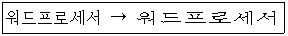
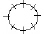
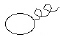
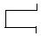
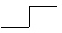

워드프로세서-3급(폐지) (2003-08-31 기출문제)
1과목: 워드프로세서 용어 및 기능
1. 다음의 워드프로세서 장치 중에서 마우스나 스캐너 등은 어느 장치에 속하는가?
- 입력장치
- 표시장치
- 저장장치
- 인쇄장치
(정답률: 91%)

2. 다음의 기억장치 중에서 처리속도가 가장 느린 것은?
- 하드디스크
- CD-RW
- 플로피 디스크
- RAM
(정답률: 55%)
3. 다음 중에서 보조기억장치인 광디스크의 종류가 아닌 것은?
- ZIP DISK
- WORM
- DVD
- CD-ROM
(정답률: 55%)
4. 다음 중에서 문서의 특정 영역을 블록으로 지정(선택)한 다음에 할 수 있는 작업으로 가장 적절하지 않은 것은?
- 복사하기
- 잘라내기
- 불러오기
- 옮기기
(정답률: 70%)
5. 다음 중에서 문서의 특정 부분에 존재하는 많은 내용을 지우는 경우에 가장 효율적인 방법은?
- 지울 부분의 맨 앞에서 [Delete] 키를 계속 눌러서 지운다.
- 지울 부분의 맨 뒤에서 [Back Space] 키를 계속 눌러서 지운다.
- 지울 부분을 영역으로 선택하여 지운다.
- 수정 상태에서 [Space] 키를 계속 눌러서 지운다.
(정답률: 79%)
6. 다음 중에서 조판기능에 해당하지 않는 것은?
- 머리말
- 꼬리말
- 각주
- 치환
(정답률: 80%)
7. 다음 중에서 확장자(Extension)의 형태로 옳지 않은 것은?
- 그림파일 : BMP
- 백업파일 : BAK
- 문서파일 : TXT
- 압축파일 : DOC
(정답률: 60%)
8. 다음 중 버퍼(Buffer)와 가장 거리가 먼 것은?
- 잘라내기(오려두기)
- 붙이기(붙여넣기)
- 영역지정
- 복사하기
(정답률: 71%)
9. 다음 중 표시기능에 대한 설명으로 옳은 것은?
- 문서의 내용을 보조기억장치에 보관하는 기능
- 문서의 내용 중 특정부분을 수정, 삽입, 삭제하는 기능
- 문서의 내용을 화면상에 나타내주는 기능
- 문서의 내용을 컴퓨터 내부에 전달하는 기능
(정답률: 59%)
10. 문서작성 중에 입력한 내용을 지울 때 사용하는 키로 옳지 않은 것은?
- [Shift] 키
- [Back Space] 키
- [Delete] 키
- [Space Bar] 키
(정답률: 70%)
11. 다음 중에서 다른 키와 조합하여 특수한 기능을 수행하는 키로 옳지 않은 것은?
- [Insert] 키
- [Alt] 키
- [Shift] 키
- [Ctrl] 키
(정답률: 75%)
12. 다음 보기와 같이 글자의 모양을 변경시키려면 어떤 값을 조정해야 하는가?

- 자간
- 장평
- 글꼴
- 크기
(정답률: 77%)
13. 다음 중 자주 사용되는 단축키에 대한 설명으로 옳지 않은 것은?
- [Ctrl] + V : 붙여넣기
- [Ctrl] + C : 복사하기
- [Ctrl] + X : 이동하기
- [Ctrl] + Z : 실행 취소
(정답률: 73%)
14. 다음 중 자주 사용되는 어휘나 도형을 간단한 약어로 등록시켜 놓고 필요할 때마다 호출하여 사용하는 기능은?
- 클립보드
- 버퍼
- 상용구
- 매크로
(정답률: 74%)
15. 작성된 문서의 파손이나 분실에 대비하여 파일을 따로 복사해 두는 작업을 무엇이라고 하는가?
- 링크(Link)
- 백업(Backup)
- 옵션(Option)
- 압축
(정답률: 84%)
16. 화면에 표시된 문서나 내용을 그대로 프린터에 출력하는 기능은?
- 하드 카피(Hard Copy)
- 소프트 카피(Soft Copy)
- 레이아웃(Layout)
- 블록(Block)
(정답률: 56%)
17. 컴퓨터 시스템에서 기본적으로 설정되어 있는 값은?
- 스크롤(Scroll)
- 셋업(Setup)
- 메뉴(Menu)
- 디폴트(Default)
(정답률: 62%)
18. 다음 중 각 페이지마다 문서의 위쪽에 고정적으로 들어가는 글을 무엇이라고 하는가?
- 머리말(Header)
- 꼬리말(Footer)
- 각주(Footnote)
- 미주(Endnote)
(정답률: 73%)
19. 다음 중 실제적으로 내용의 변경을 가져오지 않는 교정기호는?


(정답률: 88%)
20. 다음 중 문단의 줄을 바꾸는 기호는?


(정답률: 75%)
2과목: PC 운영 체제
21. 다음 중 한글 Windows 98을 종료하려고 할 때 나타나는 [Windows 종료] 대화상자의 선택 항목이 아닌 것은?
- 시스템 종료(S)
- 시스템 다시 시작(R)
- 인터넷 사용을 위한 다시 시작(I)
- MS-DOS 모드에서 시스템 다시 시작(M)
(정답률: 55%)
22. 한글 Windows 98에서 활성화된 폴더 창의 구성 요소가 아닌 것은?
- 제목 표시줄
- 메뉴 바
- 상태 표시줄
- 시계
(정답률: 74%)
23. 한글 Windows 98에서 활성화된 창의 화면을 캡쳐하여 클립보드에 저장하는 기능을 하는 윈도우의 바로 가기 키는?
- [Alt] + [Print Screen]
- [Alt] + [F10]
- [Ctrl] + [Esc]
- [Ctrl] + [Back Space]
(정답률: 55%)
24. 다음 중에서 한글 Windows 98의 제목 표시줄에 있는 아이콘에 대한 설명으로 옳지 않은 것은?
- 은 해당 윈도우의 작업을 저장하고 종료한다.
- 은 해당 윈도우의 크기를 전체 화면으로 확대시키는 기능이다.
- 은 타이틀 바의 오른쪽 끝에 있으며, 해당 윈도우를 종료한다.
- 은 전체화면 표시 이전의 창의 크기로 회복한다.
(정답률: 79%)
25. 한글 Windows 98에서 [탐색기] 창의 [보기] 메뉴 중에 [자세히]를 선택하였을 때 [탐색기] 창에 제공되는 정보가 아닌 것은?
- 이름
- 종류
- 크기
- 작성자
(정답률: 73%)
26. 한글 Windows 98에서 [탐색기] 창의 왼쪽에 있는 폴더 목록 표시 창에 표시된 일부 폴더에 "+" 표시가 의미하는 것은?
- 현재 폴더의 상위폴더가 있음을 나타낸다.
- 폴더 내에 다수의 파일이 존재하고 있음을 나타낸다.
- 폴더 내에 하위폴더가 있음을 나타낸다.
- 현재 폴더에 하위폴더를 만들 수 있음을 의미한다.
(정답률: 51%)
27. 다음 중 한글 Windows 98에서 특정 응용 프로그램을 제거하려고 할 때 가장 적절한 방법은?
- 해당 프로그램이 있는 폴더를 모두 삭제한다.
- 해당 프로그램이 있는 드라이브를 포맷한다.
- 해당 프로그램의 백업파일을 삭제한다.
- Uninstall을 하거나 [제어판]에서 [프로그램 추가/제거]를 이용하여 삭제한다.
(정답률: 69%)
28. 한글 Windows 98의 [제어판]에 있는 [마우스] 프로그램으로 설정 가능한 항목이 아닌 것은?
- 마우스 포인터의 속도 조절이 가능하다.
- 두 번 클릭의 속도 조절이 가능하다.
- 바탕 화면에서 오른쪽 마우스 버튼 선택 시 나타나는 바로 가기 메뉴의 항목에 관한 편집이 가능하다.
- 왼손잡이를 위한 마우스 설정이 가능하다.
(정답률: 56%)
29. 한글 Windows 98에서 활성화된 창 화면의 글꼴이나 해상도 등을 변경하고자 할 때, 사용하는 [제어판]의 프로그램 항목은?
- 시스템
- 글꼴
- 내게 필요한 옵션
- 디스플레이
(정답률: 49%)
30. 한글 Windows 98의 [제어판]에 있는 [키보드]를 선택하여 수행할 수 있는 기능에 해당하지 않는 것은?
- 키 재입력 시간 조절
- 고정키 설정
- 키 반복 속도 조절
- 커서 깜박임 속도 조절
(정답률: 50%)
31. 다음 중 한글 Windows 98에서 사용하는 일반적인 파일의 등록정보 창에 나타나는 파일의 속성이 아닌 것은?
- 읽기 전용(R)
- 숨김(D)
- 기록(C)
- 사용자(U)
(정답률: 56%)
32. 한글 Windows 98의 [탐색기]에서 파일을 선택한 후에 [Ctrl] 키를 누른 상태로 마우스 왼쪽 버튼을 눌러 다른 폴더에 끌어다 놓으면 어떤 명령이 수행되는가?
- 파일의 복사
- 파일의 이동
- 파일의 단축 아이콘 만들기
- 파일의 삭제
(정답률: 62%)
33. 한글 Windows 98에서 휴지통을 사용하지 않고 직접 파일을 삭제할 때 사용하는 바로 가기 키는?
- [Ctrl] + [Del]
- [Shift] + [Del]
- [Alt] + [Del]
- [Ctrl] + [Alt] + [Del]
(정답률: 63%)
34. 한글 Windows 98의 바탕화면에 있는 아이콘들의 정렬 방법이 아닌 것은?
- 모양(S)
- 크기(Z)
- 종류(T)
- 이름(N)
(정답률: 58%)
35. 한글 Windows 98에서 새로운 하드웨어를 자동으로 인식하여 설치하는 기능을 무엇이라고 하는가?
- Automatic Play
- Plug & Play
- Auto & Play
- Auto & Plug
(정답률: 80%)
36. 다음 중 한글 Windows 98에서 사용 가능한 파일 이름에 대한 설명으로 옳지 않은 것은?
- 파일의 확장자를 3문자로 제한한다.
- 파일 이름을 255Byte까지 사용할 수 있다.
- / ￦ < > * : ? 등의 문자는 파일 이름에 사용할 수 없다.
- 여러 개의 “.?? 문자를 사용할 경우 맨 마지막 점 오른쪽의 단어를 확장자로 사용한다.
(정답률: 52%)
37. 한글 Windows 98의 시작 메뉴 중에서 [설정]의 하위 메뉴에 포함되지 않는 것은?
- 시스템(S)
- 제어판(C)
- 프린터(P)
- 작업 표시줄 및 시작 메뉴(T)
(정답률: 35%)
38. 한글 Windows 98의 작업 표시줄에 있는 [시작] 단추에서 마우스의 오른쪽 버튼으로 눌렀을 때 나타나는 메뉴 항목이 아닌 것은?
- 열기(O)
- 실행(R)
- 탐색(E)
- 찾기(F)
(정답률: 48%)
39. 한글 Windows 98의 [제어판]에 있는 [내게 필요한 옵션]의 등록정보 창에서 포함하고 있지 않은 탭(Tab) 항목은?
- 키보드
- 사운드
- 네트워크
- 마우스
(정답률: 59%)
40. 다음 중 한글 Windows 98에서 사용하는 기본 프린터에 대한 설명으로 옳은 것은?
- 사용자는 기본 프린터로 설정된 프린터만 사용이 가능하다.
- 동시에 여러 대의 프린터를 기본 프린터로 지정할 수 있다.
- 두 대 이상의 프린터를 사용할 때는 자주 사용하는 프린터 한 대를 기본 프린터로 지정한다.
- 기본 프린터만이 네트워크 프린터로 사용될 수 있다.
(정답률: 54%)